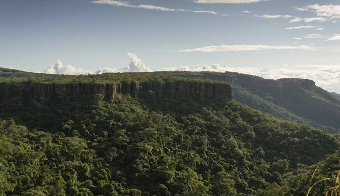

Mato Grosso é um estado brasileiro do Centro-Oeste, conhecido pela sua vasta extensão territorial, rica biodiversidade e forte economia agropecuária. É o terceiro maior estado do Brasil em área e possui três biomas principais: Amazônia, Cerrado e Pantanal. A capital é Cuiabá, e o estado é o maior produtor de grãos do Brasil, com destaque para a soja.
